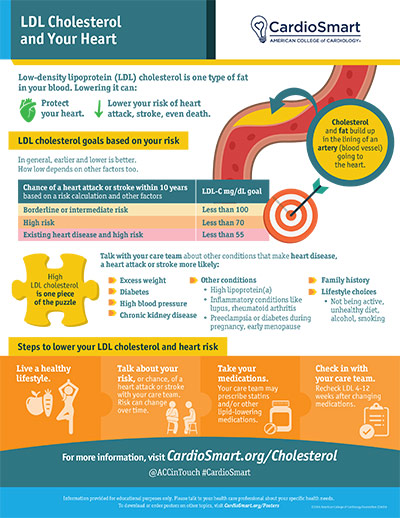

Cholesterol and Your Heart
Cholesterol is a waxy, fat-like substance your body needs to build cells and make hormones — your liver actually makes all the cholesterol you require. Problems start when there is too much of the wrong kind in the blood, because it silently deposits in artery walls and builds the plaque that causes heart attacks and strokes.
Understanding the Numbers
Cholesterol travels in the blood inside particles called lipoproteins. A standard blood test — a lipid panel — measures:
- LDL ("bad" cholesterol): carries cholesterol into artery walls. Lower is better.
- HDL ("good" cholesterol): carries cholesterol away from arteries to the liver for disposal. Higher is better.
- Triglycerides: another blood fat used for energy; high levels add to risk, especially combined with high LDL or low HDL.
- Total cholesterol: the combined measure. Above 200 mg/dL is generally considered high.
| Measure | Optimal level |
|---|---|
| Total cholesterol | About 150 mg/dL |
| LDL ("bad") cholesterol | About 100 mg/dL |
| HDL ("good") cholesterol | At least 40 mg/dL (men) / 50 mg/dL (women) |
| Triglycerides | Less than 150 mg/dL |
"Optimal" is a population guideline. Your personal LDL target depends on your overall heart-disease risk — for people who have had a heart attack, stent, or stroke, the goal can be much lower (often below 70 mg/dL). Your doctor will tell you what number is right for you.

How Cholesterol Harms Your Arteries
The damage happens in the artery wall, in stages:
- Entry: excess LDL particles slip through the thin inner lining of an artery — especially where the lining is already irritated by smoking, high blood pressure, or diabetes.
- Inflammation: the LDL becomes trapped and oxidized; the body treats it like an invader and sends white blood cells to the spot, creating chronic inflammation inside the wall.
- Plaque: fat, cells, and scar tissue accumulate into a bump (plaque) that narrows the channel and stiffens the artery — this is atherosclerosis.
- Rupture: some plaques develop a thin cap. If it ruptures, a blood clot forms over it within seconds. That clot can suddenly choke off flow in a heart artery — a heart attack — or travel to the brain and cause a stroke.
This is why cholesterol treatment is not about "feeling better" today — it is about keeping plaque from growing and, above all, keeping it stable so it never ruptures.
Why It Matters to Diagnose and Treat It
High cholesterol causes no symptoms at all. There is no way to feel it, see it, or guess it — the only way to know is a blood test. Many people discover they have coronary disease only when they have their first heart attack. Finding and treating high cholesterol early, and lowering LDL decisively in people who already have plaque, is one of the most reliably proven strategies in all of medicine for preventing heart attacks, strokes, and death.
What High Cholesterol Can Lead To
- Coronary artery disease — chest pain (angina) or shortness of breath with exertion.
- Heart attack from a ruptured plaque in a heart artery.
- Stroke from plaque or clots in the arteries to the brain.
- Peripheral artery disease — narrowing in leg arteries causing pain when walking.
- Combined risk: with high blood pressure, smoking, or diabetes, plaque grows faster still.
How It Is Diagnosed
- Lipid panel: a simple blood test, usually done fasting, that measures total cholesterol, LDL, HDL, and triglycerides.
- How often: ask your doctor — healthy adults are typically screened every 4–6 years, and at least yearly if levels are high, treatment is being adjusted, or other risk factors such as diabetes exist.
- Risk assessment: your doctor combines your numbers with age, blood pressure, smoking status, and diabetes to estimate your 10-year risk and decide how aggressively to treat.
- Family screening: very high LDL in a young person can point to inherited familial hypercholesterolemia, which also affects family members who should be tested.
How It Is Treated
Lifestyle changes
- Eat less saturated and trans fat: cut back on fatty red meat, full-fat dairy, butter, and deep-fried and packaged baked goods; replace them with fish, poultry, beans, nuts, olive oil, fruits, vegetables, and whole grains.
- Lose excess weight: even modest weight loss improves LDL, HDL, and triglycerides.
- Move more: at least 150 minutes of moderate activity (brisk walking) per week raises HDL and helps weight and blood pressure.
- Quit smoking: smoking lowers HDL and directly injures artery lining — quitting is one of the fastest wins for your arteries.
- Limit alcohol and added sugar, which raise triglycerides.
Medications
- Statins: the first-choice medicines — they lower LDL, stabilize plaque, and have repeatedly been shown to prevent heart attack and stroke.
- Ezetimibe: blocks cholesterol absorption in the gut, often added to a statin.
- PCSK9 inhibitors: powerful injected medicines that dramatically lower LDL for people at very high risk or with inherited very high cholesterol.
- Other options (fibrates, fish oil, niacin-like medicines) may be used for specific situations such as very high triglycerides.
Your treatment is matched to your risk, not just your number — and any medicine is layered on top of the lifestyle foundation, not instead of it.
Know the warning signs of a heart attack or stroke
Cholesterol causes no symptoms until the day a plaque ruptures. Call 911 immediately for chest pressure or pain (especially with sweating, nausea, or shortness of breath), or for stroke signs — face drooping, arm weakness, slurred speech, sudden severe headache, or vision loss. Minutes matter.
Key Takeaways
- High LDL builds silent plaque; there are no symptoms until a heart attack or stroke.
- The only way to know your numbers is a blood test (lipid panel).
- Optimal for most adults: LDL about 100 mg/dL, total about 150 mg/dL, triglycerides under 150.
- Treatment is a healthy lifestyle plus statins — and stronger medicines for higher risk.
- Your personal target depends on your overall risk; ask your doctor what goal is right for you.
Reliable Sources
- CDC, About Cholesterol
- CardioSmart (American College of Cardiology), LDL Cholesterol and Your Heart — infographic
- CardioSmart, High Cholesterol topic center
This page is for general education only and does not replace advice from your doctor. If you have questions about your own cholesterol or treatment, please contact the office.